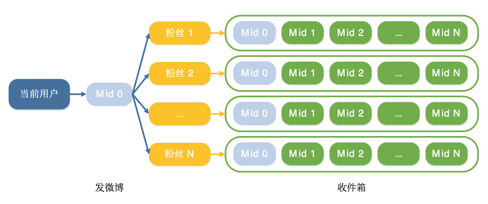
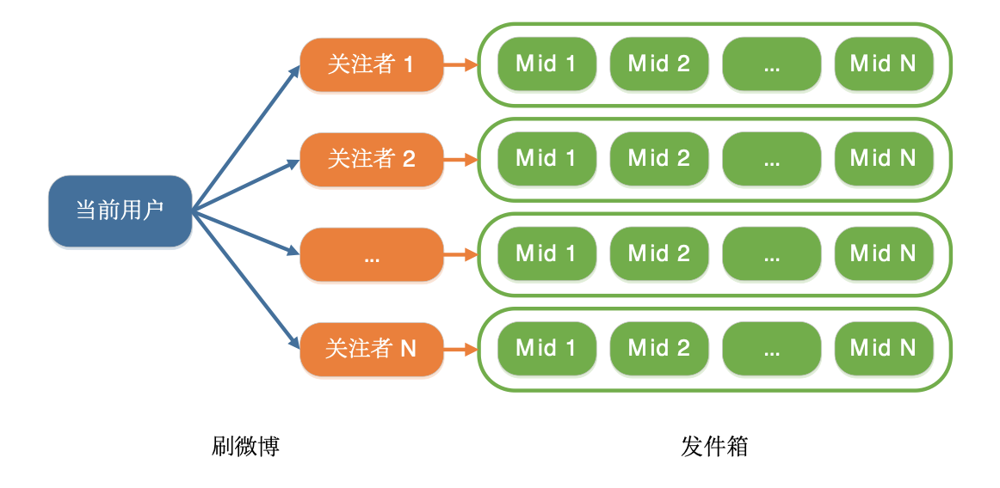

- 00 开篇词 微服务，从放弃到入门.md.html
- 01 到底什么是微服务？.md.html
- 02 从单体应用走向服务化.md.html
- 03 初探微服务架构.md.html
- 04 如何发布和引用服务？.md.html
- 05 如何注册和发现服务？.md.html
- 06 如何实现RPC远程服务调用？.md.html
- 07 如何监控微服务调用？.md.html
- 08 如何追踪微服务调用？.md.html
- 09 微服务治理的手段有哪些？.md.html
- 10 Dubbo框架里的微服务组件.md.html
- 11 服务发布和引用的实践.md.html
- 12 如何将注册中心落地？.md.html
- 13 开源服务注册中心如何选型？.md.html
- 14 开源RPC框架如何选型？.md.html
- 15 如何搭建一个可靠的监控系统？.md.html
- 16 如何搭建一套适合你的服务追踪系统？.md.html
- 17 如何识别服务节点是否存活？.md.html
- 18 如何使用负载均衡算法？.md.html
- 19 如何使用服务路由？.md.html
- 20 服务端出现故障时该如何应对？.md.html
- 21 服务调用失败时有哪些处理手段？.md.html
- 22 如何管理服务配置？.md.html
- 23 如何搭建微服务治理平台？.md.html
- 24 微服务架构该如何落地？.md.html
- 25 微服务为什么要容器化？.md.html
- 26 微服务容器化运维：镜像仓库和资源调度.md.html
- 27 微服务容器化运维：容器调度和服务编排.md.html
- 28 微服务容器化运维：微博容器运维平台DCP.md.html
- 29 微服务如何实现DevOps？.md.html
- 30 如何做好微服务容量规划？.md.html
- 31 微服务多机房部署实践.md.html
- 32 微服务混合云部署实践.md.html
- 33 下一代微服务架构Service Mesh.md.html
- 34 Istio：Service Mesh的代表产品.md.html
- 35 微博Service Mesh实践之路（上）.md.html
- 36 微博Service Mesh实践之路（下）.md.html
- 微博技术解密（上） 微博信息流是如何实现的？.md.html
- 微博技术解密（下）微博存储的那些事儿.md.html
- 结束语 微服务，从入门到精通.md.html
- 阿忠伯的特别放送 答疑解惑01.md.html
- 阿忠伯的特别放送 答疑解惑02.md.html
- 捐赠
微博技术解密（上） 微博信息流是如何实现的？
专栏结束后，有不少同学留言希望我能讲一些微博基础架构的知识。所以接下来的微博技术解密系列，我将分享微博在信息流架构、存储中间件等方面的经验，希望能给你带来启发和帮助。
今天我们先来看微博信息流架构，也就是微博的Feed是如何构建的。首先什么是Feed呢？根据我的理解，Feed是互联网2.0时代的产物，它与互联网1.0时代的产物——门户网站最大的不同之处就是Feed不需要用户在各个板块之间来回跳转获取信息，而是把不同的信息都聚合在一起，可以供用户源源不断地访问。这里就涉及了两个问题，一个是信息如何保存，另一个是信息如何聚合。这也是今天我要分享的主要内容，我会从存储架构的角度阐述微博Feed是如何存储的，然后会从业务架构的角度阐述微博Feed是如何聚合的。
微博Feed存储架构
我们知道，微博Feed是由关注人的微博聚合在一起组成的，所以要存储每个人发的微博，那么在设计存储架构时主要需要注意三个问题：
每秒数据写入量，也就是每秒发博量是多大。
每秒数据访问量，也就是每秒微博请求量是多大。
是否有冷热数据之分，也就是微博的请求是否有时间特点。
结合微博的业务场景，我来回答上面提出的三个问题。首先是每秒发博量，这里要考虑到极端情况，比如元旦零点，瞬间会有大量用户发博，达到数万QPS。再来看下每秒微博请求量，同样要考虑到在热点事件时，比如“春晚”时会有大量用户访问微博，请求量也会达到数万QPS；并且每个用户关注的不止是一个人，假设关注数的平均值是200，那么微博数据的请求量就是几百万QPS。除此之外，微博的访问也是有时间特点的，用户一般访问新发微博的概率要远远大于一周前发的微博，所以说微博数据也是有冷热之分的。
这三个问题共同决定了微博的存储架构应该如何设计。在讨论微博存储架构前，我们先来看看目前业界比较成熟的存储方案，主要分为下面几种。
以MySQL为代表的关系型数据库。主要用来存储结构比较固定的数据，因为使用的是磁盘存储，所以写入和访问能力主要取决于磁盘的读写能力。而磁盘主要分为SAS盘和SSD盘，也就是机械盘和固态盘，两者的读写能力有一定的差距，SSD盘读写能力是SAS盘的3倍左右，不过QPS都在千级别。磁盘存储的特点是不易丢失数据，可以永久保存。
以Memcached和Redis为代表的内存存储。服务器的内存大小一般要远小于磁盘，在几十GB到几百GB之间，而磁盘通常都是TB级。内存存储的优势就是读写速度快，读写能力能到几十万QPS，远远大于磁盘存储。但由于数据存储在内存中，如果进程挂掉或者机器重启，内存中的数据就清空了。
HBase为代表的分布式存储。属于非关系型数据库，它的特点是数据结构不固定，因此适合非结构化的数据存储，而且由于采用了分布式存储，使用HDFS作为底层文件存储系统，所以可以存储海量数据，并且具备非常高的写入性能。
讲到这里，结合前面提到的微博业务场景，你觉得存储架构该如何设计呢？
根据微博的实际业务情况，用户的微博需要永久保存，也就是进行持久化存储，而且微博的数据结构是固定的，优先考虑采用关系型数据库，因此MySQL是一种选择。但是考虑到单台MySQL读能力的极限是不到一万QPS，而微博的数据请求量是几百万QPS，如果单纯使用MySQL来应对的话，需要上千台服务器，成本非常高。还有一点就是微博数据的请求是有冷热之分的，一周外的数据访问的概率要远小于一周内的数据。综合以上几点考虑，可以在MySQL存储的前面，再加一层缓存，比如使用Memcached，存储最近一周内的微博，而用户的全量微博数据则持久化存储在MySQL中。假设用户访问一周内微博的概率是99%，那么对缓存的请求量就是几百万QPS，而对数据库的请求量就只有几万QPS了，而缓存的读写能力是几十万QPS，相比较而言，需要的机器数要远小于只使用数据库了。
微博Feed业务架构
经过前面的讲解，假设我们已经使用MySQL + Memcached的双层存储架构解决了微博的存储问题，接下来面临的问题就是，如何将存储的关注人的微博数据聚合成一股源源不断的信息流以供用户访问。
根据我的经验，信息流聚合一般有三种架构：推模式、拉模式以及推拉结合，下面我来详细讲解这三种架构。
1. 推模式
推模式，顾名思义就是把关注人的发的微博，主动推送给粉丝，就像下图描述的那样。推模式相当于有一个收件箱，当关注人发微博的时候，就给所有粉丝的收件箱推送这条微博，这样的话，不管你关注了多少人，他们发的微博都会主动推送到你的收件箱，你只需要访问自己的收件箱，就可以获取到所有关注人发的微博了。

2. 拉模式
拉模式与推模式恰恰相反，就像图里那样每个人都有一个发件箱，发微博的时候就把微博存储到发件箱，这样的话，如果要获取所有关注人发的微博，就需要遍历关注人的发件箱列表，取出所有关注人的发件箱，然后按照时间顺序聚合在一起。

我们先来对比下微博Feed采用哪种架构比较合适。首先来看推模式，它的特点是聚合简单，每个人只要查看自己的收件箱就可以获取到关注人发的所有微博，但缺点是即使粉丝没有请求Feed，每个人发的微博也都要给所有粉丝推送一遍，所以写入量会非常高，尤其是对于具有上亿粉丝的用户来说，发一条微博需要给上亿粉丝的收件箱推送这条微博，这个写入量是非常大的，给处理机和数据库带来的压力可想而知。并且同一条微博会存储多份，占用的存储空间也非常大，并且如果需要修改或者删除微博，需要请求所有粉丝的收件箱。考虑到微博是公开的社交媒体平台，拥有上千万粉丝的用户不在少数，所以采用推模式的话，存储成本以及数据更新成本会非常高，需要大量的缓存和数据库以及队列机来更新。早期Twitter的Feed就采用了推模式，经常出现更新延迟，就是因为大量的写入带来巨大压力所导致。
再来看下拉模式，它的特点是聚合逻辑复杂，每个人要想查看关注人发的所有微博，需要遍历关注人列表，获取所有微博后再按照时间聚合在一起，对数据的请求量和聚合带来的计算量要远远大于推模式。但因为每个用户的微博只存在自己的发件箱列表中，所以相比于推模式来说，存储成本要小得多，并且如果有数据修改，只需要修改自己的发件箱列表就可以了。
3. 推拉结合
在对比了推模式和拉模式各自的优缺点之后，也就自然而然产生一种新想法，是不是可以采用推拉结合的方式，各取两者的优点呢？针对关注的粉丝量大的用户采用拉模式，而对于一般用户来说，他们的粉丝量有限，采用推模式问题不大，这样的话一个用户要获取所有关注人的微博，一方面要请求粉丝量大的关注人的发件箱列表，另一方面要请求自己的收件箱列表，再把两者聚合在一起就可以得到完整的Feed了。
虽然推拉结合的方式看似更加合理，但是由此带来的业务复杂度就比较高了，因为用户的粉丝数是不断变化的，所以对于哪些用户使用推模式，哪些用户使用拉模式，维护起来成本就很高了。所以综合考量下来，微博Feed采用了拉模式。
前面提到采用拉模式的话，需要拉取所有关注人的发件箱，在关注人只有几十几百个的时候，获取效率还是非常高的。但是当关注人上千以后，耗时就会增加很多，实际验证获取超过4000个用户的发件箱，耗时要几百ms，并且长尾请求（也就是单次请求耗时超过1s）的概率也会大大增加。为了解决关注人数上千的用户拉取Feed效率低的问题，我们采用了分而治之的思想，在拉取之前把用户的关注人分为几组，并行拉取，这样的话就把一次性的聚合计算操作给分解成多次聚合计算操作，最后再把多次聚合计算操作的结果汇总在一起，类似于MapReduce的思路。经过我们的实际验证，通过这种方法可以有效地降级关注人数上千用户拉取Feed的耗时，长尾请求的数量也大大减少了。
总结
今天我给你讲解了微博Feed的存储架构以及业务架构的选型，你可以看到最终方案都是结合微博的业务场景以及当时存储的成熟度做出的选择。微博诞生于2009年，并在2010年进行了平台化改造，确定了现在这一套存储和业务架构。当时的存储成熟度决定了MySQL + Memcached的组合是最优解，并没有使用Redis、HBase等后来更为先进的数据库；同时由于微博Feed的业务特点，选择了拉模式的业务架构，并针对关注人数上千的场景进行了拉取方式的优化，也被实践证明是行之有效的手段。
思考题
如果让你来设计微博的存储架构，除了使用MySQL + Memcached，你觉得还可以使用哪些存储？
欢迎你在留言区写下自己的思考，与我一起讨论。
© 2019 - 2023 Liangliang Lee. Powered by gin and hexo-theme-book.